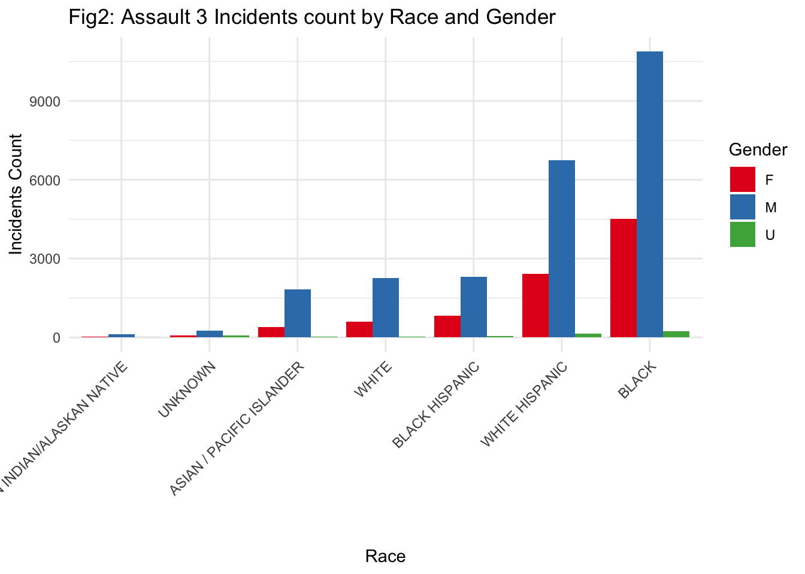
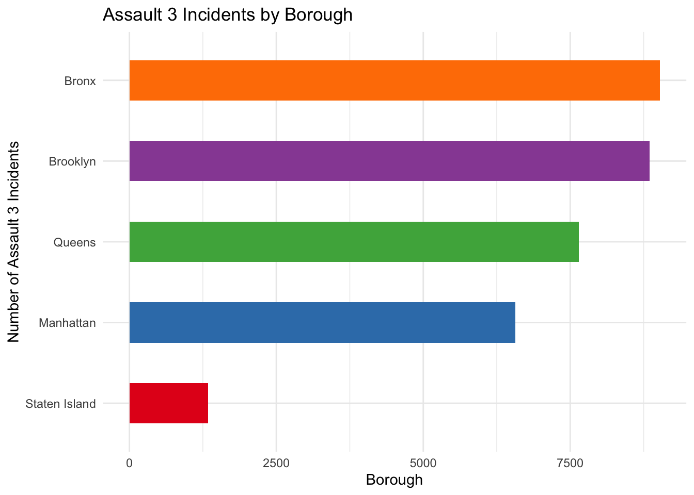
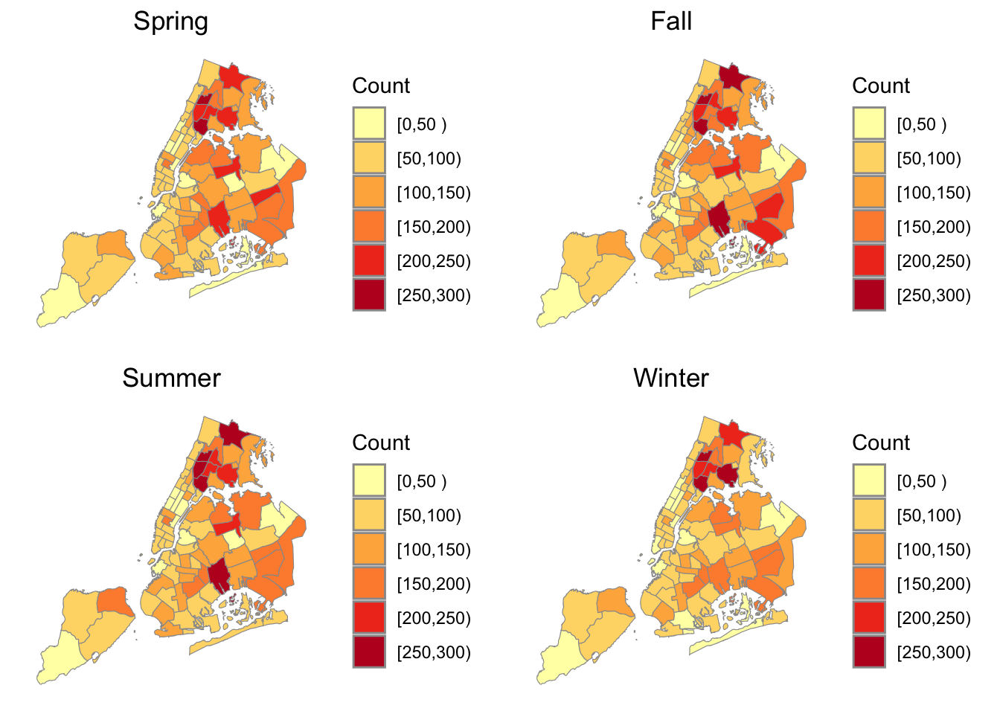
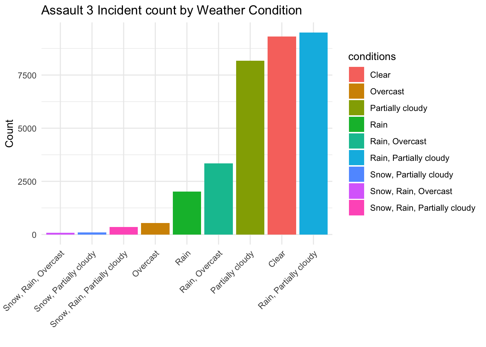
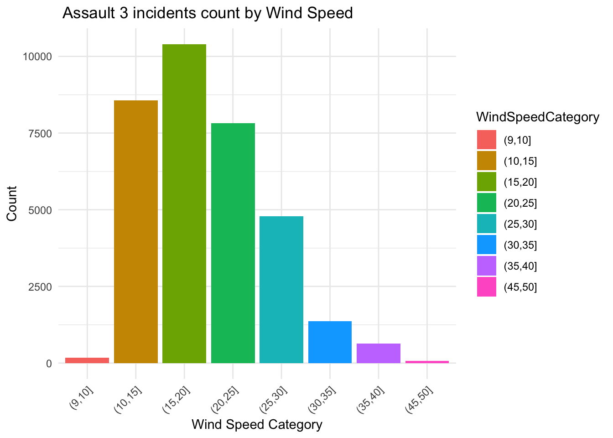
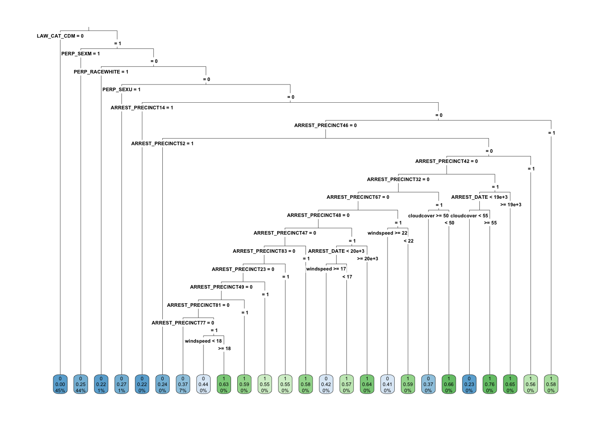
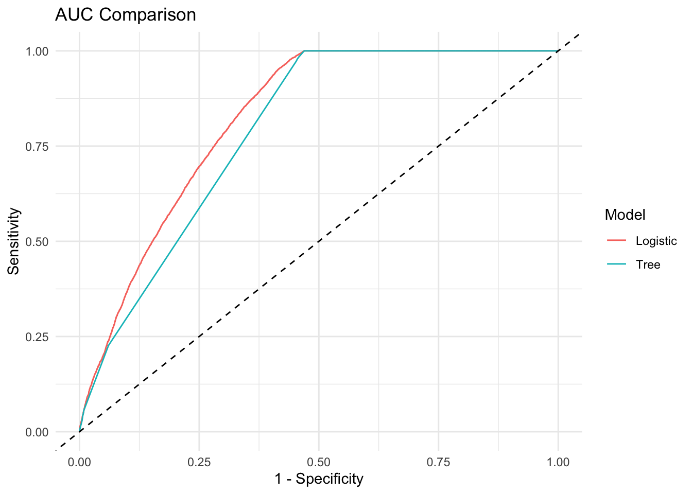

Analysis
Here we provide a detailed analysis using more sophisticated statistics techniques.
Introduction
According to our analysis in Big Picture page, we found that the Level 3 Assault is the most common cases in the New York City, so we decide to locate our target on the Demographic factor and Environmental factor that would effect the incidents of Level 3 Assault. Through this analysis, We could uncover correlations that inform targeted interventions, enhance policy-making, and improve resource allocation. By identifying specific risk factors related to demographics and environmental conditions, the analysis aims to guide more effective prevention strategies, optimize urban planning, and strengthen community engagement and support.
Our team will focus on the analysis of following variables in the dataset:
Demographic factor : Age, Race, Borough
Environmental factor: Temperature,weather condition,wind speed, cloud space
Briefly, we found these factors shows some effect to occurring of Assaults 3 crime in different levels.
Demographic factor
Age
From this bar chart, we could know that the distribution of Assault 3 incidents across different age groups in New York City. It highlights that the age group 25-44 has the highest incidence count, significantly surpassing other age groups, with the lowest counts observed in the under-18 and 65+ age brackets. Next we are going to move to gender and race’s relationship with Assault 3 crime rate.
Gender and Race

From this graph we could directly find out that males always have higher number of incidents than female. Also, the highest number of incidents is associated with Black males, followed by White Hispanic males.
However, it have some limitations of this graph. The graph’s representation of Assault 3 incidents by race and gender may be skewed by reporting biases and systemic disparities in arrest records, as well as not accounting for the actual demographic distribution of New York City’s population.
Borough

The graph presents a horizontal bar chart of Assault 3 incidents by borough in New York City, showing Bronx with the highest number of incidents followed by the Brooklyn, Queens, Manhattan, and Staten Island with the fewest.
In conclusion, by analyzing factors like region, age, and gender, we can establish a general distribution pattern for Level 3 Assault crimes. Subsequently, we will employ regression models to discern whether these factors are correlated with or causative of variations in crime rates. Now, we are moving to the EDA of environmental factors.
Environmental Factors
Temperature

These maps reveal a clear pattern in “Assault 3” incidents: they peak during the summer months, likely due to the increase in outdoor activities and social interactions that warmer weather encourages. Spring and Fall act as transitional periods with moderate crime rates, suggesting a correlation with the gradual changes in weather and daylight hours, which influence how much time people spend outside. The winter months show a marked decrease in crime rates, possibly due to the cold weather discouraging outdoor activity. These trends indicate that environmental factors, such as temperature and seasonality, may play a significant role in the fluctuation of crime rates, necessitating seasonally adjusted strategies for law enforcement and community safety programs.
Weather Condition

The bar chart illustrates the frequency of Assault 3 incidents occurring under various weather conditions. Clear weather and Rain with partially is associated with the highest number of incidents, followed closely by overcast and partially cloudy conditions. Incidents are less frequent during more adverse weather conditions, such as combinations of snow, rain, and overcast skies, suggesting possible correlations between weather and the occurrence of Assault 3 crimes.
Wind speed

This bar chart shows that incidents are most frequent in wind speeds ranging from 10 to 20 km/h and significantly less frequent as wind speeds increase beyond 20 km/h, suggesting fewer Assault 3 incidents occur in higher wind conditions.
Model
We choose Logistic regression model and Decision tree model to further analysis the relationship between key factors and Assault 3 crime rate.
Logistic Regression Model
To identify patterns in ASSAULT 3 by considering various factors such as age, gender, race of the perpetrator, as well as environmental factors like temperature and weather conditions, we decide to build a logistic regression model to predict the likelihood of an arrest being for “ASSAULT 3”. This helps police understand under what circumstances such crimes are more likely to occur, aiding in the development of proactive policing strategies.
first,we use a binary response variable y is created to represent whether each arrest falls into this category. The data is then split into training and validation sets, we randomly select 80% to be training set, 20% to be validation set.
Confusion Matrix for log model
| Actual 0 | Actual 1 | |
|---|---|---|
| Predicted 0 | 38136 | 6600 |
| Predicted 1 | 236 | 277 |
| Metric | Value |
|---|---|
| Accuracy | 0.8489 |
| AUC | 0.8223 |
To better evaluate the model, We build a confusion matrix to show the accuracy of the model, which is the proportion of correct predictions (true positives and true negatives) out of the total predictions, is calculated at approximately 84.88%. This indicates that the model performs well in general. Additionally, the Area Under the Curve (AUC) score of 0.8222, shown below the confusion matrix, further confirms the model’s effectiveness in distinguishing between the two classes.
Prediction of Logistic Model
| High Confidence Predictions for Assault 3 Crimes1 | ||||||||||||
| Displaying cases with prediction probability above 70% | ||||||||||||
| Arrest Date | Offense Level | Borough | Precinct | Age Group | Sex | Race | Temperature (°C) | Wind Speed (km/h) | Weather Condition | Cloud Cover (%) | Arrest Month | y |
|---|---|---|---|---|---|---|---|---|---|---|---|---|
| 2023-03-20 | M | K | 67 | <18 | F | BLACK | 5.0 | 17.5 | Clear | 0.1 | 3 | 0 |
| 2023-03-27 | M | B | 48 | <18 | F | WHITE HISPANIC | 10.3 | 23.6 | Rain, Partially cloudy | 41.2 | 3 | 1 |
| 2023-04-30 | M | M | 32 | <18 | F | BLACK | 12.4 | 21.8 | Rain, Overcast | 100.0 | 4 | 1 |
| 2023-04-30 | M | M | 32 | <18 | F | BLACK | 12.4 | 21.8 | Rain, Overcast | 100.0 | 4 | 1 |
| 2023-04-30 | M | M | 32 | <18 | F | BLACK | 12.4 | 21.8 | Rain, Overcast | 100.0 | 4 | 1 |
| 2023-06-17 | M | M | 22 | 25-44 | F | WHITE HISPANIC | 20.9 | 13.3 | Partially cloudy | 54.0 | 6 | 1 |
| 2023-07-25 | M | B | 42 | <18 | F | WHITE HISPANIC | 24.3 | 20.1 | Rain, Partially cloudy | 24.4 | 7 | 1 |
| 2023-08-12 | M | B | 42 | <18 | F | BLACK | 25.4 | 18.0 | Rain, Partially cloudy | 26.5 | 8 | 1 |
| 2023-08-16 | M | B | 47 | <18 | F | BLACK | 24.0 | 19.7 | Rain, Partially cloudy | 85.3 | 8 | 1 |
| 2023-08-21 | M | K | 67 | <18 | F | BLACK | 27.0 | 12.8 | Partially cloudy | 21.7 | 8 | 1 |
| 2023-09-23 | M | K | 67 | <18 | F | BLACK | 16.4 | 36.4 | Rain, Partially cloudy | 81.9 | 9 | 1 |
| 2023-10-09 | M | B | 47 | <18 | F | WHITE HISPANIC | 13.7 | 22.3 | Partially cloudy | 35.5 | 10 | 1 |
| 2023-10-10 | M | K | 83 | <18 | F | WHITE HISPANIC | 15.1 | 19.8 | Rain, Partially cloudy | 62.7 | 10 | 1 |
| 2023-10-16 | M | B | 42 | <18 | F | WHITE HISPANIC | 14.1 | 14.7 | Partially cloudy | 36.7 | 10 | 1 |
| 2023-10-24 | M | K | 67 | <18 | F | BLACK | 14.8 | 14.4 | Clear | 0.8 | 10 | 1 |
| 2023-11-13 | M | M | 22 | 25-44 | M | ASIAN / PACIFIC ISLANDER | 7.5 | 17.8 | Partially cloudy | 29.8 | 11 | 1 |
| 2023-11-29 | M | K | 67 | <18 | F | BLACK | 1.0 | 26.2 | Partially cloudy | 20.7 | 11 | 0 |
| 2023-12-14 | M | B | 42 | <18 | F | WHITE HISPANIC | 3.8 | 20.3 | Clear | 9.7 | 12 | 1 |
| 2023-12-22 | M | M | 32 | <18 | F | BLACK | 1.0 | 20.2 | Clear | 3.2 | 12 | 1 |
| 1 Data sourced from validated records with high predictive confidence. | ||||||||||||
We filtered out cases where the logistic regression model predicted a probability greater than 0.70 for the outcome of interest, focusing on instances where the model confidently predicted an arrest as “ASSAULT 3.”
The results indicate that “ASSAULT 3” crimes typically occur between March and December, especially during rainy or cloudy weather with temperatures above zero Celsius. These incidents predominantly happen in central Brooklyn, the Bronx, and uptown Manhattan. At the precinct level, Precincts 67, 32, and 42 are notable hotspots.
Demographically, the majority of offenders are African American or White Hispanic, often around or below 18 years of age. Interestingly, the data also shows a significant proportion of female offenders, primarily involved in misdemeanor-level offenses.
Decision Trees model
Next, we decide to use Decision tree model to predict whether an arrest falls into the category of “ASSAULT 3” based on various demographic, legal, and environmental factors. It will provides a clear framework for understanding and predicting ASSAULT 3, helping law enforcement and policymakers make informed decisions based on data-driven insights.
Prediction of Decision Tree Model

The decision tree model classifies incidents of “ASSAULT 3” based on a probability threshold of 50%. For instance, if the individual is a male, identified as white, and located in Precinct 14, there is only a 22%(Last row, fifth from the begin) chance of an assault crime occurring, thus placing it in the category of unlikely to experience “ASSAULT 3.”
Conversely, the model predicts a higher likelihood that 76% probability((Last row, fourth from the end)) of an “ASSAULT 3” related crime if the perpetrator is a female, non-white, located in Precinct 42, and the cloud cover exceeds 55%.
This scenario highlights how the decision tree uses combinations of demographic and environmental factors to determine the probability of assault-related offenses.
Confusion Matrix for decision tree model
| Actual 0 | Actual 1 | |
|---|---|---|
| Predicted 0 | 38076 | 6557 |
| Predicted 1 | 296 | 320 |
| Metric | Value |
|---|---|
| Accuracy | 0.8485 |
| AUC | 0.7897 |
To better evaluate the model, We build a confusion matrix to show the accuracy of the model, which is the proportion of correct predictions (true positives and true negatives) out of the total predictions, is calculated at approximately 84.86%. This indicates that the model performs well in general. Additionally, the Area Under the Curve (AUC) score of 0.7897, shown below the confusion matrix, further confirms the model’s effectiveness in distinguishing between the two classes.
Compare the Accuracy between these two models

We use the ROC curves to evaluate the performance of classification models. The area under the curve (AUC) for each model can be used to quantify the overall performance. The higher the AUC, the better the model’s ability to discriminate between the two classes.The logistic model (red curve) appears to outperform the tree model (blue curve) by achieving a higher AUC, which indicates that it has a better overall classification performance for the arrest data.
More details about summary of models could find in post 7.
Limitations
Errors in how data on crimes, demographics, or environmental factors are measured and recorded can lead to biased outcomes in the analysis. And the findings are based on specific demographic and environmental conditions that may not be applicable to other regions or over different time periods.
Conclusion
We found that demographic factors, including the age, gender, and race of the perpetrator, significantly impact the occurrence of Assault 3 crimes. Additionally, environmental factors such as the specific precinct show a robust correlation with these crimes. However, while temperature and weather conditions also influence crime rates, their impact is less significant compared to the other variables mentioned.